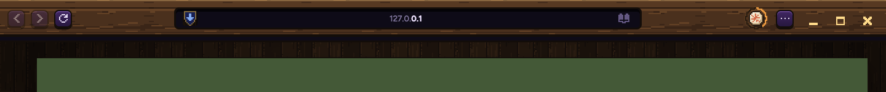
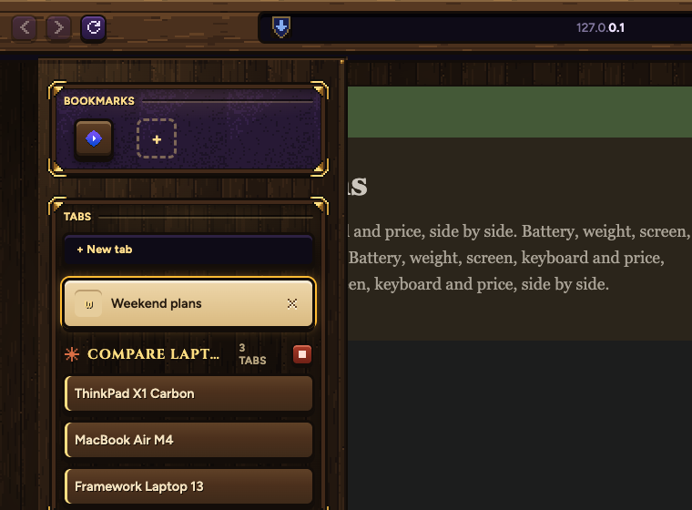
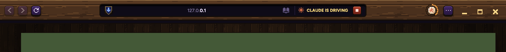
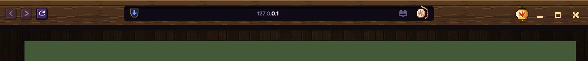
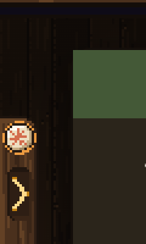
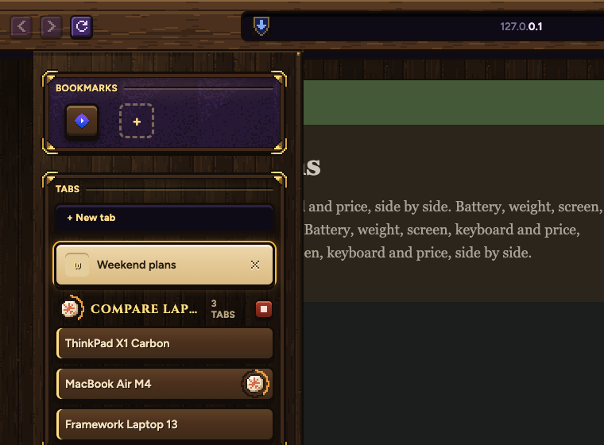
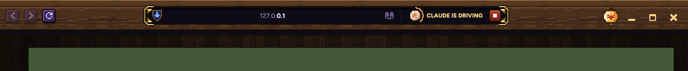
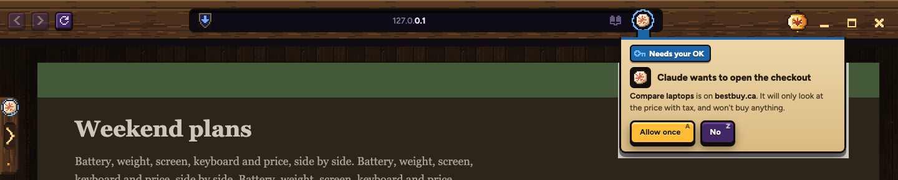
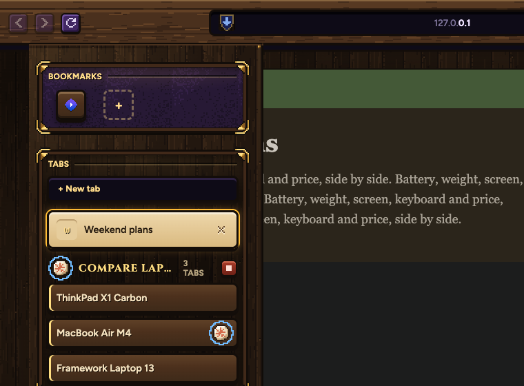

Every picture of the bar and the tab list is Samara itself, with Claude comparing three laptops in its own tabs.
Same size as every key in the bar (18 by 18 pixels, shown at 2x), drawn by hand. The lantern gets a hook, a gold rim, ribbed paper lit from inside, a real maple leaf and a tassel. The rune keeps the shape you called perfect, with a cleaner stone, a glint and a chipped corner.
The bar while Claude works

Your tab list

What's missing
Watching Claude's tab

Claude has one look everywhere: the rune, always the same size. Its colour tells you what's happening: working needs you done. No outlines, no glove, nothing pasted on.
The rune lives at the end of the address bar
The lantern is the menu now. The rune's ring fills as the job goes.

Carved into the tab handle
With the list closed, the rune's stone sits in the handle's wood, ringed in its colour.

In the list, the rune marks Claude's page
Claude's group wears the rune. The page Claude is on right now carries it too, where the close key sits. Nothing moves out of line.

Watching Claude's tab
The rune leads CLAUDE IS DRIVING, with Stop after it. The address bar wears the same gold corners as your tab list's panels, so it's clearly not your own tab.

When Claude needs you
Everything turns blue together, and Samara's own ask hangs from the rune: what Claude wants, where, and Allow once or No.

